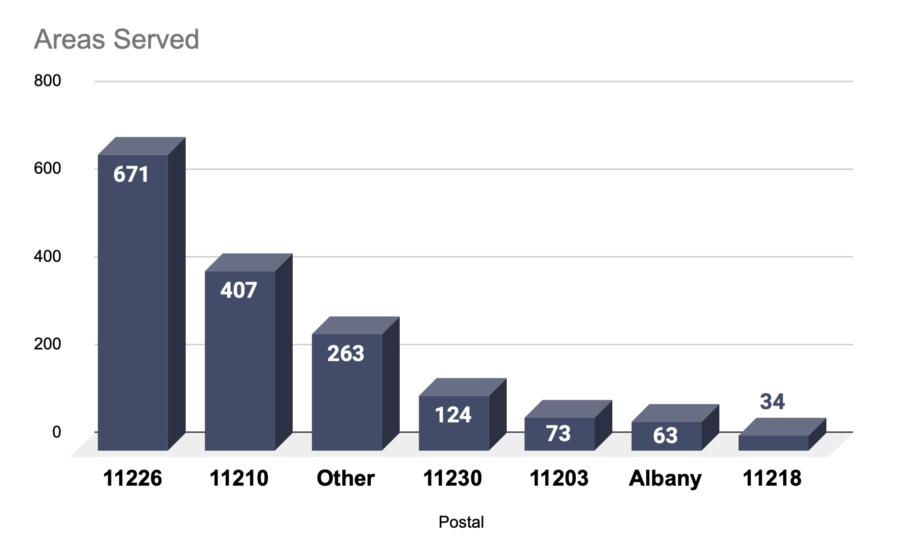
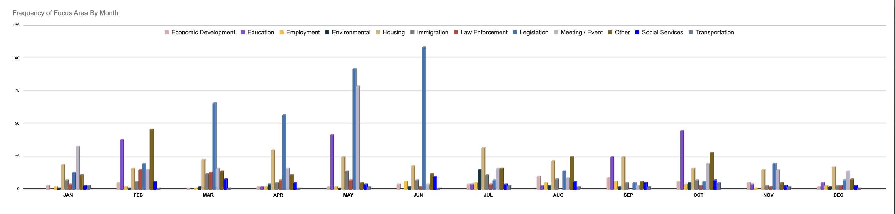
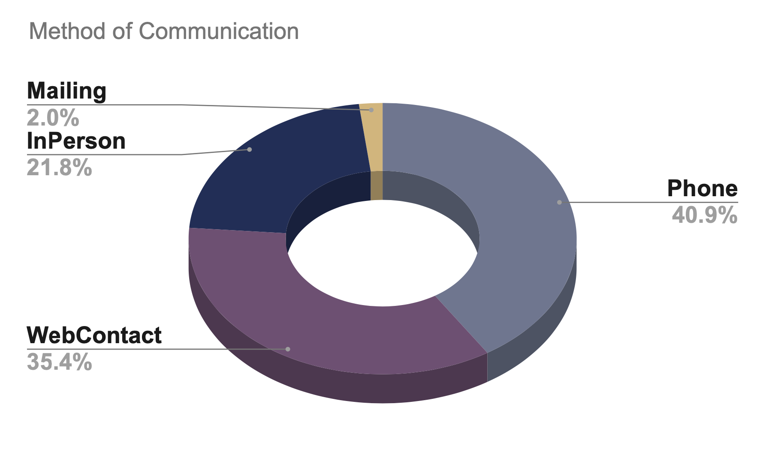
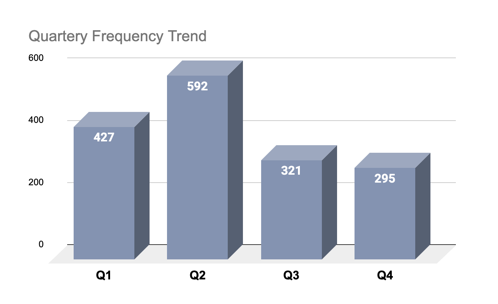
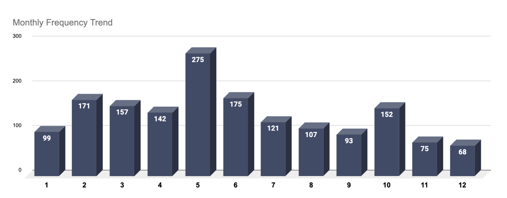
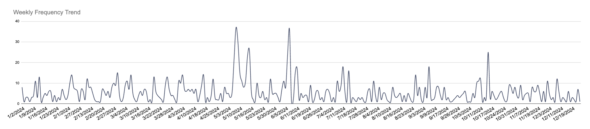

📊 Visualizing Constituent Concerns for Policy Impact
Analyzing engagement trends in Assembly District 42 to drive legislative change and improve services.
📍 ZIP Code Engagement Breakdown
📋 Issue Category Breakdown

📋 Issue Category Breakdown By Month
☎️ Constituent Communication Preferences
📅 Quarterly, Monthly & Weekly Engagement Trends
  📄 Summary & Key Takeaways
- ✔ **Housing & Legislation** were the most common constituent concerns.
- ✔ **Phone & Web Contact** were the dominant communication channels.
- ✔ A **CRM standardization process** improved data accuracy and service efficiency.
📥 Full Report Download
For an in-depth analysis, download the complete report:
🔗 GitHub Repository
Explore the cleaned dataset (anonymized) and analysis code: